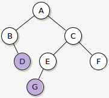
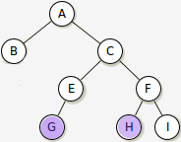

Diameter of a tree is the longest path between two leaf nodes in a tree. The following figures show that the diameter of the tree would be the maximum of these: diameter of left subtree, diameter of right subtree or path that goes through the root i.e. height of left subtree + height of right subtree + 1. The first figure shows a diameter of 6 through the root. While the second figure shows a diameter of 5 not through the root.
 
Add appropriate lines of code to the following function skeleton so that the function will recursively find the diameter of the binary tree pointed at by "root". Note: you have to use the given height function without any changes.